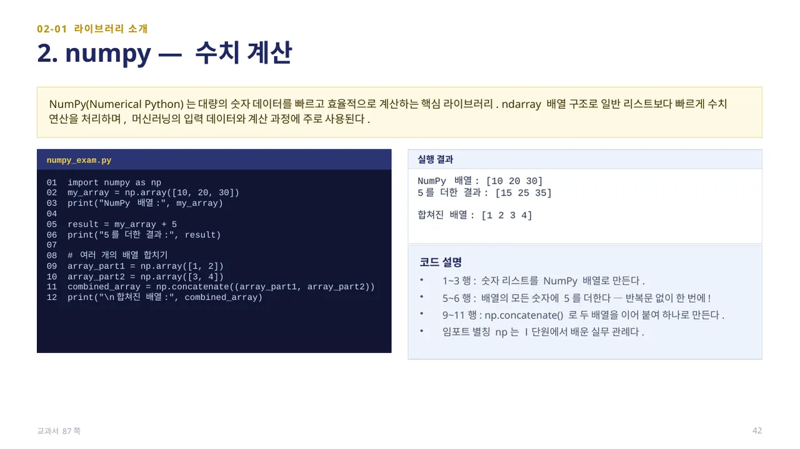
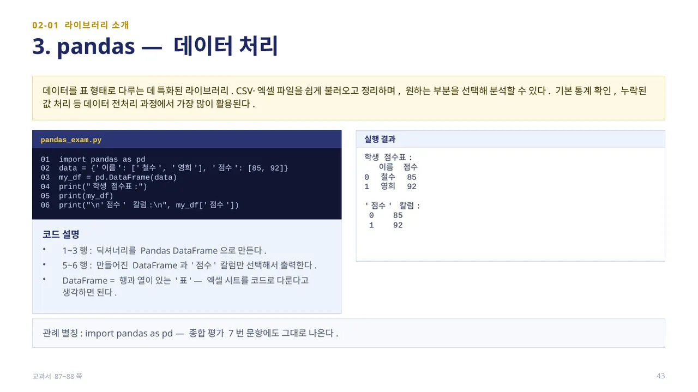
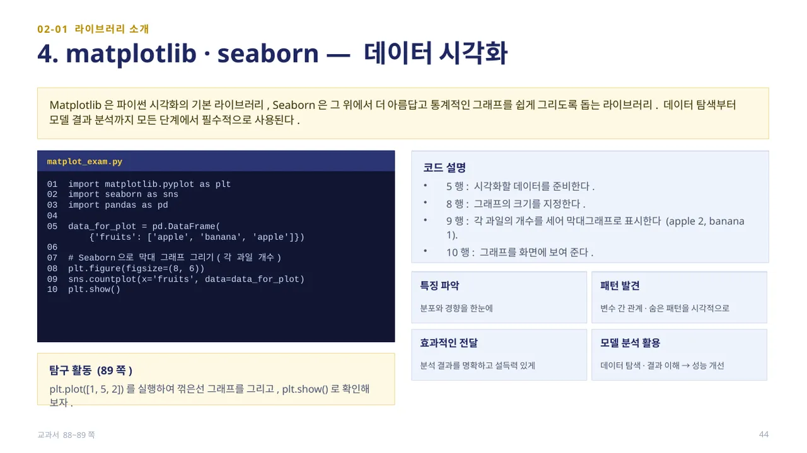
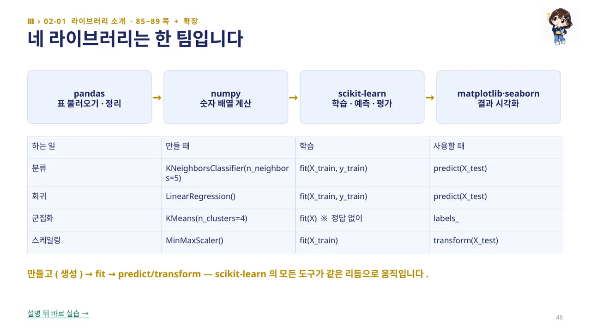
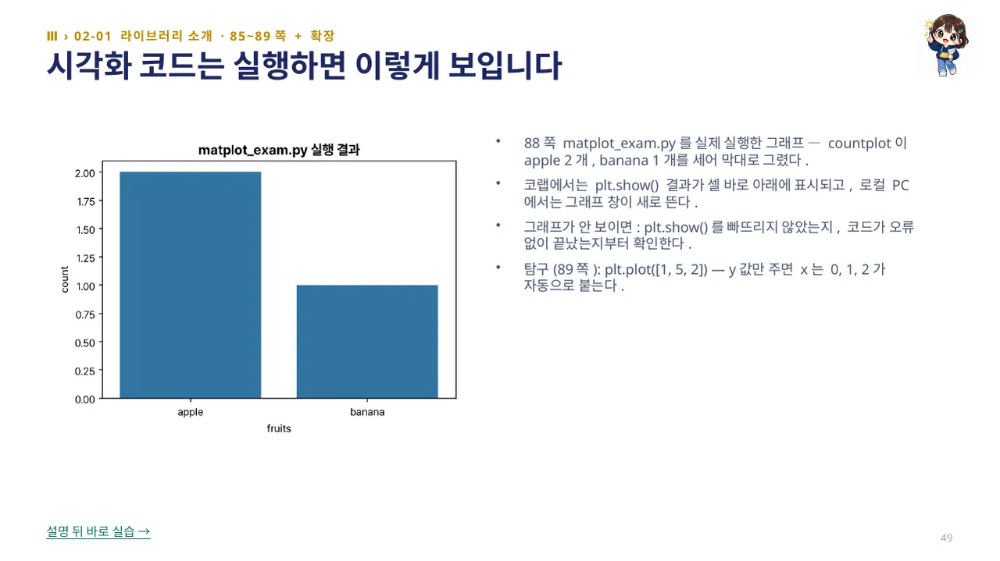

scikit-learn은 파이썬에서 가장 널리 쓰이는 머신러닝 라이브러리입니다. 분류·회귀·군집 등 다양한 알고리즘을 쉽게 사용할 수 있고, 데이터 전처리·모델 선택·평가에 필요한 기능 대부분을 일관된 방식으로 제공합니다.
sklearn_exam.py — 01~02행은 분류 모델 DecisionTreeClassifier와 numpy를 불러옵니다. 05행은 모델이 학습할 입력 데이터(공부 시간, [[1]]은 1시간, [[3]]은 3시간), 06행은 정답(레이블, 0은 불합격·1은 합격)입니다. 10행에서 model.fit(X_study, y_pass)로 모델을 학습시키고, 13행에서 새로운 값(2시간)에 대해 predict()로 예측합니다. 실행 결과는 공부 시간 2시간일 때 예측: 0 (불합격)으로, fit(학습)→predict(예측)의 두 단계로 머신러닝 모델이 완성됩니다. (교과서 86쪽)

NumPy(Numerical Python)는 대량의 숫자 데이터를 빠르고 효율적으로 계산하는 핵심 라이브러리입니다. ndarray 배열 구조로 일반 리스트보다 빠르게 수치 연산을 처리하며, 머신러닝의 입력 데이터와 계산 과정에 주로 사용됩니다.
numpy_exam.py — 1~3행은 숫자 리스트를 NumPy 배열로 만듭니다. 5~6행은 배열의 모든 숫자에 5를 더하는데, 반복문 없이 my_array + 5 한 번에 [15 25 35]가 계산됩니다. 9~11행은 np.concatenate()로 두 배열 [1,2]와 [3,4]를 이어 붙여 [1 2 3 4]로 만듭니다. 임포트 별칭 np는 Ⅰ단원에서 배운 실무 관례입니다. (교과서 87쪽)

pandas는 데이터를 표 형태로 다루는 데 특화된 라이브러리입니다. CSV·엑셀 파일을 쉽게 불러오고 정리하며, 원하는 부분을 선택해 분석할 수 있어 기본 통계 확인, 결측치 처리 같은 전처리 과정에서 가장 많이 활용됩니다.
pandas_exam.py — 1~3행은 딕셔너리를 pd.DataFrame으로 만듭니다. 5~6행은 만들어진 DataFrame 전체와 my_df['점수'] 칼럼만 선택해 출력합니다. DataFrame은 행과 열이 있는 ‘표’ — 엑셀 시트를 코드로 다룬다고 생각하면 됩니다. import pandas as pd라는 관례 별칭은 종합 평가 문항에도 그대로 등장합니다. (교과서 87~88쪽)

Matplotlib은 파이썬 시각화의 기본 라이브러리이고, Seaborn은 그 위에서 더 아름답고 통계적인 그래프를 쉽게 그리도록 돕는 라이브러리입니다. 데이터 탐색부터 모델 결과 분석까지 모든 단계에서 필수적으로 사용됩니다.
matplot_exam.py — 5행은 시각화할 데이터(과일 종류)를 준비하고, 8행plt.figure(figsize=(8,6))으로 그래프 크기를 지정합니다. 9행sns.countplot(x='fruits', data=data_for_plot)은 각 과일의 개수를 세어 막대그래프로 표시합니다(apple 2개, banana 1개). 10행plt.show()로 화면에 보여 줍니다. 시각화는 분포·경향을 한눈에 보고, 변수 간 패턴을 발견하며, 분석 결과를 명확하게 전달하는 데 쓰입니다. 탐구 활동(89쪽): plt.plot([1, 5, 2])를 실행해 꺾은선 그래프를 그려 봅니다 — y값만 주면 x는 0, 1, 2가 자동으로 붙습니다. (교과서 88~89쪽)

지금까지 배운 네 라이브러리는 하나의 팀으로 움직입니다: pandas(표 불러오기·정리) → numpy(숫자 배열 계산) → scikit-learn(학습·예측·평가) → matplotlib·seaborn(결과 시각화). scikit-learn의 모든 도구는 만들고(생성) → fit → predict/transform의 같은 리듬으로 움직입니다.
예를 들어 분류는 KNeighborsClassifier(n_neighbors=5)를 만들고 fit(X_train, y_train)으로 학습한 뒤 predict(X_test)로 예측하고, 회귀는 LinearRegression()을 같은 방식으로 쓰며, 군집화는 정답 없이 fit(X)만으로 labels_를 얻고, 스케일링은 MinMaxScaler()를 fit(X_train)한 뒤 transform(X_test)합니다. 이 표 하나가 이후 배우는 모든 알고리즘의 공통 지도입니다.

앞서 본 matplot_exam.py(88쪽)를 실제로 실행하면 위 그래프처럼 countplot이 apple 2개, banana 1개를 세어 막대로 그립니다. 코랩에서는 plt.show() 결과가 셀 바로 아래에 표시되고, 로컬 PC에서는 그래프 창이 새로 뜹니다.
그래프가 보이지 않으면 plt.show()를 빠뜨리지 않았는지, 코드가 오류 없이 끝났는지부터 확인합니다. 탐구(89쪽): plt.plot([1, 5, 2])는 y값만 주면 x는 0, 1, 2가 자동으로 붙습니다.
 인공지능 파이썬 실무
인공지능 파이썬 실무